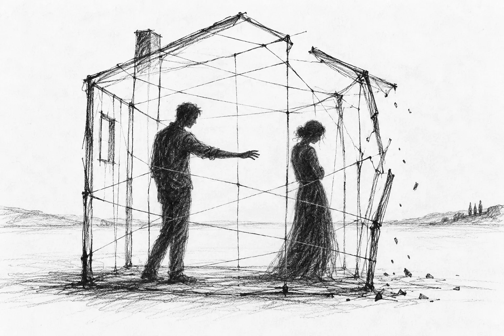
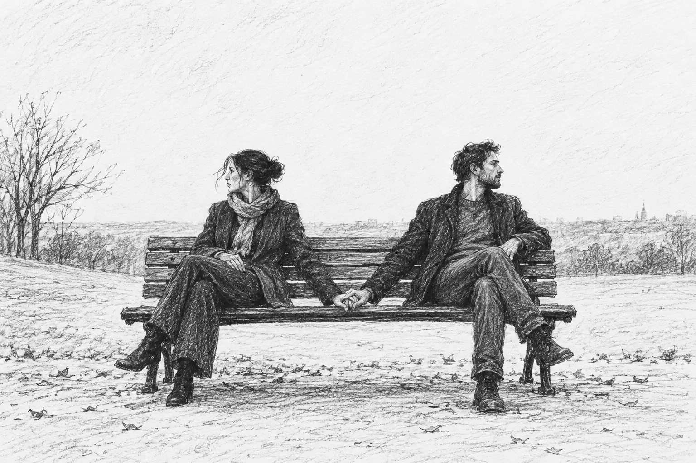
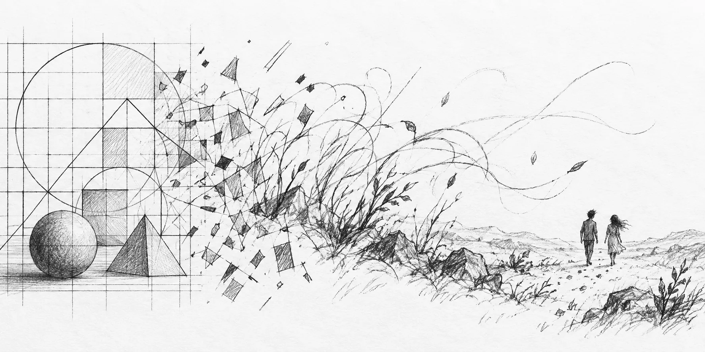

A cycle of four poems
Torments.
Four poems from one period of life.
Begin reading
Impossibility / Hurt / Holding Hands / Geometry
~2 min readImpossibility
Sitting across the tablePeople around us?Conversation?
Our eyes meet - green.I longed for this momentI longed for you to look at meFor you to look in meFor how your pupils dilate a bit when our eyes connectA fraction too long?
I break the lock.I speak loudly.I make a joke.People seem to laughYou laugh too. Or do you?
I have not been caught.This time.
Is it my imagination?Conjuring an attraction,Presuming you feel the same,Longing you feel the same,Or at least a bit.Yearning for us to be together alone.But what would we sayto each other then?
We both knowOur love is forbiddenBy barriers we can’t hope to surpass -We can’t hope -Without drifting apart.
I laugh again and longfor the next time our eyes collide.
Hurt
I hurt you because I want to feelWhen silence means deathPain is the last resort.
What happened to our promises?Our locked eyes,Our dreams once thought eternal?
A prison -a cage of expectations,of friends,of a life built together,of commitments once felt hopeful?
I wish, oh, I so wish,to rewire my mind.For reason to prevail,feelings to quiet,geometry to overcome.I wishempty smiles were enough.
I keep hurting youHoping for a miracleUntil the cage collapses.

Holding Hands
Holding handsNot even pretending to be thereSilence, no conversation.Nothing to sayNot interested in saying anything.
A connection we try to saveWe try to fakeExternal living, desert inside.
I wish I were interested in what you sayI wish you said more.A word.I feel the bud of connection starting to bloomBut then it dies in silence
Is the lingering of the other her that causes this emptiness?Or is she just the spotlight that makes the desert between us unbearable?


Geometry
DimensionsProjectionsModels
Fitting facts to thoughtsFeelings to factsModels to feelings.Aiming for understanding.A maniacal attempt to order chaos.
The beauty of the straight line,Its sterile artificiality.The safety of its controlled perfection,the reasonable escape from you, and me, and togetherness,and all the dangerous excitement of the unknown.
Surrender.to life,to the absurd,to messiness, to unpredictabledismissing geometry,its lifeless precision.
Perfection is pointlessAgainst the gentle indifference of the world.
End of collection
Back to the beginning